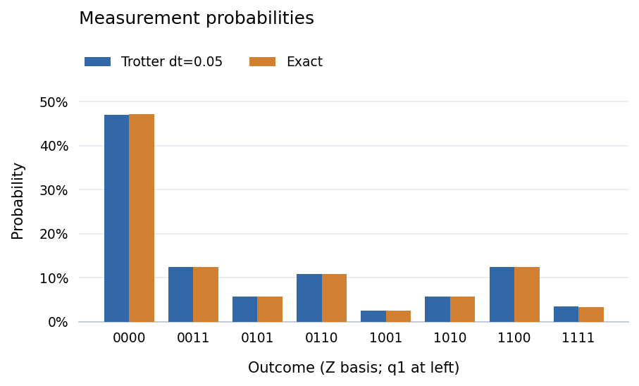
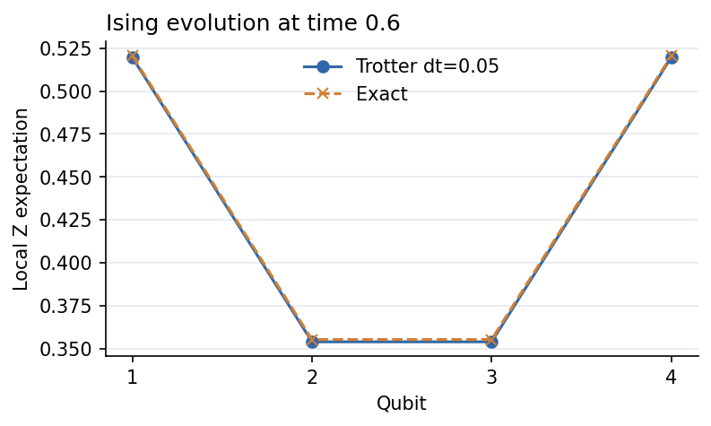
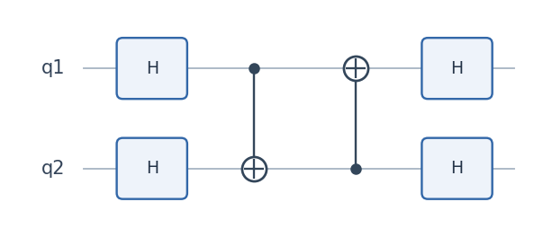
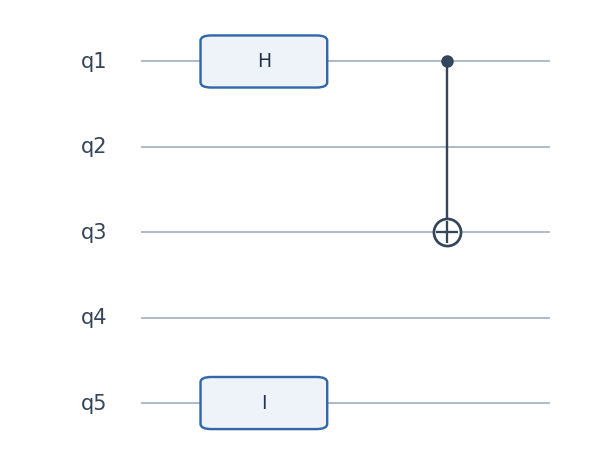
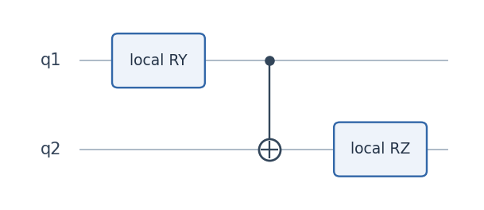
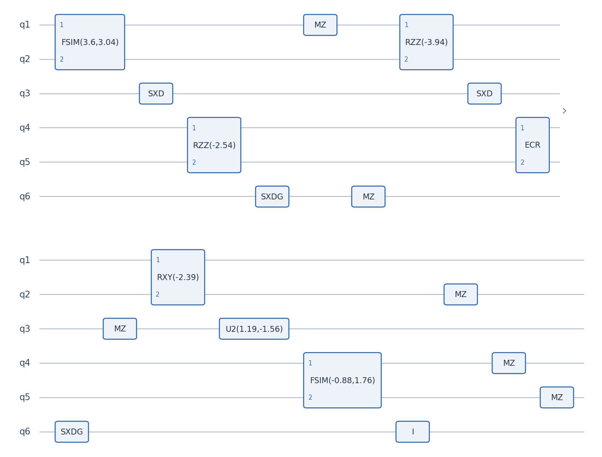
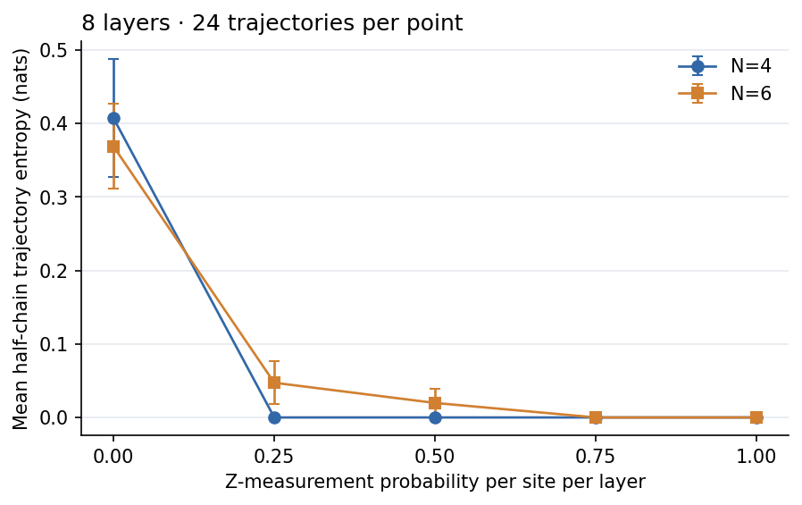

Advanced examples
Each example below is self-contained. Circuit and measurement diagrams use plotq(...) as dependency-free text by default. To reproduce the graphical figures, install and load PyPlot, select backend=:pyplot, or run docs/generate_figures.jl from the repository root. The latter also produces the scientific plots. Random samples and circuit realizations vary between runs.
9) Classical shadow experiment
shadow samples local X, Y, or Z measurement bases and averages their inverse-measurement estimators. This implementation constructs a full 2^N × 2^N matrix, so use it for small systems.
using BlueTangle, LinearAlgebra
ops = [Op("H", 1), Op("CX", 1, 2), Op("CX", 2, 3)]
circuit = compile(ops)
rho_estimate = shadow(circuit, 1000)
ZZ_estimate = correlation(rho_estimate, "Z,Z", [1, 2])
@assert isapprox(real(tr(rho_estimate)), 1; atol=1e-10)
(estimated_ZZ=ZZ_estimate, exact_ZZ=1.0)(estimated_ZZ = 0.9360000000000007, exact_ZZ = 1.0)A finite-sample shadow estimator can have negative eigenvalues and observable estimates outside physical bounds. It can estimate linear observables, but it is not necessarily a physical density matrix. Its eigenvalues cannot be treated as probabilities or inserted into an entropy formula without a separately justified reconstruction procedure.
10) Entanglement Entropy and Spectrum
For a pure global state, the reduced-state entropy measures entanglement across a cut. A Bell pair gives a check with known answer: its reduced eigenvalues are [1/2, 1/2], so the entropy is log(2) nats.
using BlueTangle
ops = [Op("H", 1), Op("CX", 1, 2)]
state = apply(ops, zero_state(2))
rho = state * state'
S_vector, spectrum = entanglement_entropy(state)
S_density = entanglement_entropy(rho; spectrum_bool=false)
psi = apply(ops, zero_state(N_MPS(2)))
S_mps = entanglement_entropy(psi, 1)
@assert isapprox(S_vector, log(2); atol=1e-12)
@assert S_vector ≈ S_density ≈ S_mps
(entropy_nats=S_vector, entanglement_spectrum=spectrum)(entropy_nats = 0.6931471805599454, entanglement_spectrum = [0.6931471805599455, 0.6931471805599455])The spectrum contains -log(p) for nonzero reduced-state eigenvalues p. Vector and density-matrix inputs use the last floor(N/2) qubits as one side. The MPS default cuts after the first floor(N/2) sites; specify the cut with entanglement_entropy(psi, b). Those defaults differ for odd N. Vector/density calls return (entropy, spectrum) by default; MPS returns the entropy alone unless spectrum_bool=true.
For a mixed global density matrix, reduced entropy includes statistical mixing and is not an entanglement measure by itself. For example, the separable mixture of |00⟩ and |11⟩ also has reduced entropy log(2).
11) Time Evolution of Hamiltonians
Consider the open-chain Ising Hamiltonian
\[H=-J\sum_{i=1}^{N-1}X_iX_{i+1}-h\sum_{i=1}^{N}Z_i.\]
hamiltonian_exp approximates exp(-im*time*H) by first-order product steps. Compare against exact evolution at the same time, using exact outcome probabilities so that shot noise does not obscure the Trotter error.
using BlueTangle, LinearAlgebra
N = 4
terms = [-1.0, "X,X", -0.8, "Z"]
time = 0.6
H = hamiltonian(N, terms)
exact_state = evolve(zero_state(N), H, time)
trotter_ops = hamiltonian_exp(N, time, terms; dt=0.05)
trotter_circuit = compile(trotter_ops)
trotter_state = to_state(trotter_circuit)
trotter_measurement = measure(trotter_state; label="Trotter dt=0.05")
exact_measurement = measure(exact_state; label="Exact")
finer_state = to_state(compile(hamiltonian_exp(N, time, terms; dt=0.025)))
@assert norm(finer_state-exact_state) < norm(trotter_state-exact_state)
@assert isapprox(norm(trotter_state), 1; atol=1e-12)
(fidelity=abs2(dot(exact_state, trotter_state)),
error_dt=norm(trotter_state-exact_state), error_half_dt=norm(finer_state-exact_state))(fidelity = 0.9980586716100336, error_dt = 0.06362947796881825, error_half_dt = 0.03176682969373355)The first 16 scheduled layers are shown below; this is only a preview of the full evolution circuit.
using PyPlot
plotq(trotter_circuit.layers[1:16]; backend=:pyplot, fold=6)
plotq([trotter_measurement, exact_measurement]; backend=:pyplot)


Halving dt improves this example. In general, check convergence at your chosen Hamiltonian and evolution time. Increasing circuit depth reduces discretization error while increasing simulated gate-noise exposure when a noise model is used.
12) Error Mitigation: Pauli Twirling
Pauli frames can randomize the structure of coherent gate errors. They preserve the ideal controlled gate, but only an average over frames produces the twirled channel. They do not guarantee a better answer for every circuit or observable.
using BlueTangle
rotation_error = 0.2 # radians on each member of the two-qubit channel
noise = NoiseModel(false, Noise2("rot_z", rotation_error))
twirl_ops = [Op("H", 1), Op("H", 2), Op("CX", 1, 2),
Op("CX", 2, 1), Op("H", 1), Op("H", 2)]
ideal_circuit = compile(twirl_ops, Options(circuit_name="Ideal"))
noisy_circuit = compile(twirl_ops, Options(circuit_name="Coherent noise", noise=noise))
twirled_circuit = compile(twirl_ops,
Options(circuit_name="Randomized frames", noise=noise, twirl=true))
twirl_measurements = [measure(circuit, 4000) for circuit in
(ideal_circuit, noisy_circuit, twirled_circuit)]
@assert all(m -> isapprox(sum(m.sample), 1; atol=1e-12), twirl_measurements)
[m.expect for m in twirl_measurements]3-element Vector{Vector{Float64}}:
[1.0, 1.0]
[0.9564999999999999, 0.9015]
[0.9569999999999999, 0.9315]The twirl=true sampling path chooses frames on each shot. Here single-qubit frame gates are ideal because the model only adds two-qubit noise. Giving them single-qubit noise changes the comparison and can offset the benefit.
plotq(noisy_circuit; backend=:pyplot)
plotq(twirl_measurements; backend=:pyplot)

13) Manual noise amplification and extrapolation
For a CNOT, three consecutive copies implement the same ideal gate because CNOT^2 = I. Replacing each CNOT by 2pairs + 1 copies increases the number of noisy two-qubit operations while preserving the ideal circuit. Copy and fold the operation list explicitly before each measurement.
using BlueTangle
base_ops = [Op("H", 1), Op("CX", 1, 2)]
noise = NoiseModel(false, Noise2("depolarizing", 0.01))
scales = [1, 3, 5]
measurements = Measurement[]
for pairs in 0:2
folded = copy(base_ops)
cnot_amplifier!(folded, pairs)
@assert to_state(compile(folded)) ≈ to_state(compile(base_ops))
circuit = compile(folded, Options(noise=noise))
push!(measurements, measure(circuit, 2000; backend=:density_matrix))
end
values = [correlation(m, [1, 2]) for m in measurements]
intercept, slope, se_intercept, se_slope = linear_fit(scales, values)
(scales=scales, sampled_ZZ=values, extrapolated_ZZ=intercept)(scales = [1, 3, 5], sampled_ZZ = [0.969, 0.9339999999999999, 0.9059999999999999], extrapolated_ZZ = 0.9835833333333334)The scale labels count CNOT applications. They describe a uniform noise scale only under the chosen stationary gate-noise model; other error sources require separate treatment. The linear intercept is an estimate under that model, and its regression error is not a complete uncertainty estimate. It can lie outside the physical interval or be less accurate than the unmitigated value.
op_amplifier! repeats every operation. Repeating a general rotation changes the ideal circuit; use cnot_amplifier! for this example. There is no automatic noise-scaling option or special measurement mode.
14) Error Mitigation: Measurement Errors
For independent classical readout errors, a known response matrix maps true basis probabilities to observed ones. BlueTangle can apply its inverse to the sampled distribution. This example uses a 10% bit flip immediately before readout; the response is assumed known, without calibration uncertainty.
using BlueTangle
readout_ops = [Op("H", 1), Op("CX", 1, 2)]
readout_error = Noise1("bit_flip", 0.1)
readout_circuits = [
compile(readout_ops, Options(circuit_name="Ideal")),
compile(readout_ops, Options(circuit_name="Readout error", readout_noise=readout_error)),
compile(readout_ops, Options(circuit_name="Inverse corrected",
readout_noise=readout_error, measurement_mitigate=true)),
]
readout_measurements = [measure(circuit, 4000; backend=:density_matrix)
for circuit in readout_circuits]
@assert all(m -> isapprox(sum(m.sample), 1; atol=1e-12), readout_measurements)
[correlation(m, [1, 2]) for m in readout_measurements]3-element Vector{Float64}:
1.0
0.631
1.00078125plotq(readout_measurements; backend=:pyplot)
Inverse correction amplifies sampling error and can produce signed estimates and expectation values outside their physical bounds at finite shot counts. It does not undo gate errors or unknown/correlated readout errors. A singular response, such as a 50% bit flip, cannot be inverted.
15) Layout and Nonlocal Swaps during Circuit Compilation
Layout takes a site-occupancy grid, not an adjacency matrix. Positive cells are physical qubits; horizontally and vertically adjacent occupied cells are neighbors. Qubits are numbered in Julia's column-major order. This grid has five qubits, connected as 2—1—3—4—5:
using BlueTangle, SparseArrays
layout = Layout(sparse([1 1 1; 1 0 1]))
layout.geometry2×3 SparseArrays.SparseMatrixCSC{Int64, Int64} with 5 stored entries:
1 3 4
2 ⋅ 5The compiler routes nonlocal two-qubit gates with swaps and restores the original wire ordering afterwards. A local gate needs no swaps:
nonlocal_ops = [Op("H", 1), Op("CX", 1, 5)]
local_ops = [Op("H", 1), Op("CX", 1, 3), Op("I", 5)]
controlled_ops = [Op("H", 1), Op("X", 5; control=1)]
nonlocal_circuit = compile(nonlocal_ops; layout=layout)
local_circuit = compile(local_ops; layout=layout)
controlled_circuit = compile(controlled_ops; layout=layout)
@assert to_state(nonlocal_circuit) ≈ apply(nonlocal_ops, zero_state(5))
@assert to_state(controlled_circuit) ≈ apply(controlled_ops, zero_state(5))
@assert nonlocal_circuit.stats.swap_count > 0
@assert local_circuit.stats.swap_count == 0
@assert controlled_circuit.stats.swap_count > 0
plotq(controlled_circuit)q1: ─[H]─────×────────────────────────────×───
│ │
q2: ─────────┼────────────────────────────┼───
│ │
q3: ─────────×───────×────────────×───────×───
│ │
q4: ─────────────────×─────●──────×───────────
│
q5: ───────────────────────⊕──────────────────


Routing these operations is not a complete hardware transpiler. Arbitrary whole-register callbacks and general multi-controlled operations are not decomposed into a device's native gate set. Layout(...; noisy_swap=true) can include inserted swaps in the circuit's gate-noise model.
16) Hadamard Test
An ancilla prepared and measured with Hadamards gives
\[\langle Z_{\mathrm{anc}}\rangle=\operatorname{Re}\langle\psi|U|\psi\rangle.\]
Here U=Z and the system is |1⟩, so the answer is -1. Qubit 1 is the ancilla; qubit 2 is the system. There are exactly two ancilla Hadamards.
using BlueTangle
hadamard_ops = [Op("X", 2), Op("H", 1), Op("Z", 2; control=1), Op("H", 1)]
state = apply(hadamard_ops, zero_state(2))
ancilla_Z = expect(state, "Z")[1]
@assert isapprox(ancilla_Z, -1; atol=1e-12)
ancilla_Z-0.9999999999999996
For finite-shot estimation use prob(state, shots, 1) and subtract the returned probabilities p0-p1. The exact calculation above separates the identity being tested from sampling noise.
17) Swap Test
A controlled swap between two input states gives 2Pr(ancilla=0)-1 = |⟨psi|phi⟩|^2. Take psi=|0⟩ and phi=|+⟩; their squared overlap is 1/2.
using BlueTangle
swap_ops = [Op("H", 3), Op("H", 1), Op("SWAP", 2, 3; control=1), Op("H", 1)]
state = apply(swap_ops, zero_state(3))
overlap_squared = expect(state, "Z")[1]
@assert isapprox(overlap_squared, 0.5; atol=1e-12)
(p_ancilla_zero=(1+overlap_squared)/2, overlap_squared=overlap_squared)(p_ancilla_zero = 0.7499999999999999, overlap_squared = 0.49999999999999983)
Qubit 1 is the ancilla, and qubits 2 and 3 hold the two inputs. The measurement reveals the squared magnitude of the overlap, not its complex phase.
18) Variational Quantum Eigensolver
VQE minimizes the energy within a chosen parameterized circuit. A converged optimizer need not reach the true ground state: the ansatz may be too restricted, or the optimization may find a local minimum. A small exact diagonalization provides a useful reference.
using BlueTangle, LinearAlgebra
N = 3
H = hamiltonian(N, [-1.0, "Z,Z", -0.9, "X"])
exact_energy = eigmin(Hermitian(Matrix(H)))
ansatz = AnsatzOptions(N=N, ops=["RY", "CX"], loss=H,
deep_circuit=true, model="lbfgs", paramshift=true,
pars_initial=fill(0.3, 100), number_of_iterations=40)
initial_energy = ansatz.loss(variational_apply(ansatz.pars_initial, ansatz))
energies, parameters = VQE(ansatz)
variational_state = variational_apply(parameters, ansatz)
final_energy = real(expect(variational_state, H))
@assert final_energy >= exact_energy - 1e-10
@assert final_energy <= initial_energy + 1e-10
(exact=exact_energy, variational=final_energy, parameters=ansatz.dim)(exact = -3.245922864592051, variational = -3.2342474721723034, parameters = 3)

The recorded history contains objective evaluations, including trial points; it is not necessarily one point per accepted optimizer iteration.
Custom local functions can also define variational gates. Their arguments are assigned consecutively from the parameter vector:
using BlueTangle
custom_ops = QuantumOps[Op("local RY", theta -> _RY(theta), 1),
Op("CX", 1, 2), Op("local RZ", theta -> _RZ(theta), 2)]
custom_ansatz = AnsatzOptions(N=2, ops=custom_ops,
loss=hamiltonian(2, [-1.0, "Z,Z", -0.7, "X"]), pars_initial=[0.2, 0.4])
@assert custom_ansatz.dim == 2
@assert get_N(variational_apply([0.2, 0.4], custom_ansatz)) == 2
plotq(custom_ansatz)q1: ─[local RY]────●──────────────
│
q2: ───────────────⊕───[local RZ]─
Use analytic parameter-shift rules only for the supported named gates. For a custom function, the default differentiation path must be compatible with that function; an arbitrary custom gate does not automatically inherit a shift rule.
19) Measurement-induced entanglement transition using MPS
This example illustrates the finite-circuit competition behind the topic in its title. It does not locate or establish a measurement-induced transition. Unitary gates can build entanglement, while local measurements remove it on average along individual pure-state trajectories.
First check the MPS implementation against a dense vector for a unitary circuit. Independently executing a circuit with measurements generally selects different outcomes, so its two final pure states should not be compared directly.
using BlueTangle, LinearAlgebra, Statistics
unitary_ops = random_ops(6, 4)
dense = apply(unitary_ops, zero_state(6))
psi = apply(unitary_ops, zero_state(N_MPS(6)); cutoff=0.0, maxdim=8)
@assert isapprox(abs2(dot(dense, to_state(psi))), 1; atol=1e-10)
illustrative_ops = random_ops(6, 3; measure_prob=0.2, measure_basis=["MZ"])
plotq(illustrative_ops)q1: ───●────────────────────────[FSWAP]─────────────────────────
│ │
q2: ───●──────────────────────────[2]───────────────────────────
q3: ───────[RXX(-0.92)]──────────────────[I]────────────────────
│
q4: ───────────[2]────────────────────────────[I]───────────────
q5: ─────────────────────[SYC]────────────────────────●─────────
│ │
q6: ──────────────────────[2]─────────────────────────⊕────[MZ]─
q1: ─[U3(-1.98,1.72,2.54)]──────────────────────────────────────────
q2: ────────────────────────[SXDG]──────────────────────────────────
q3: ────────────────────────────────[Y]─────────────────────────────
q4: ─────────────────────────────────────[Y]────────────────────────
q5: ──────────────────────────────────────────[U2(-2.32,1.22)]──────
q6: ────────────────────────────────────────────────────────────[X]─
Now generate an independent circuit and Born-rule measurement trajectory for each repetition. After each random unitary layer, each site is measured in Z with probability p. Measure the entropy after the final measurement layer. At p=1, that final layer leaves a product state, giving a useful zero-entropy check.
random_ops uses its discrete mixed family of one- and adjacent two-qubit gates to fill disjoint layers; this is not a Haar-random brickwork ensemble. The generator and measurement schedule are part of the specified model.
sizes = [4, 6]
probabilities = [0.0, 0.25, 0.5, 0.75, 1.0]
depth = 8
trajectories = 24
entropy_samples = Dict{Tuple{Int,Float64},Vector{Float64}}()
for N in sizes, p in probabilities
samples = Float64[]
for repetition in 1:trajectories
ops = random_ops(N, depth; measure_prob=p, measure_basis=["MZ"])
trajectory_state = apply(ops, zero_state(N_MPS(N)); cutoff=0.0, maxdim=2^(N÷2))
push!(samples, entanglement_entropy(trajectory_state, N÷2))
end
@assert all(S -> -1e-10 <= S <= (N÷2)*log(2) + 1e-10, samples)
entropy_samples[N, p] = samples
end
@assert all(N -> maximum(abs, entropy_samples[N, 1.0]) < 1e-10, sizes)
[(N=N, p=p, mean_entropy=mean(entropy_samples[N,p]),
standard_error=std(entropy_samples[N,p])/sqrt(trajectories))
for N in sizes for p in probabilities]10-element Vector{@NamedTuple{N::Int64, p::Float64, mean_entropy::Float64, standard_error::Float64}}:
(N = 4, p = 0.0, mean_entropy = 0.3772445921976759, standard_error = 0.08059955258980772)
(N = 4, p = 0.25, mean_entropy = 0.0017648594472524188, standard_error = 0.0010425607964320161)
(N = 4, p = 0.5, mean_entropy = 1.3534763285027085e-5, standard_error = 1.3534763285027085e-5)
(N = 4, p = 0.75, mean_entropy = 0.003539718225132837, standard_error = 0.0035397182251328376)
(N = 4, p = 1.0, mean_entropy = -0.0, standard_error = 0.0)
(N = 6, p = 0.0, mean_entropy = 0.3482004094943482, standard_error = 0.061930833733077804)
(N = 6, p = 0.25, mean_entropy = 0.04535779897749106, standard_error = 0.026209613485031577)
(N = 6, p = 0.5, mean_entropy = 4.08773538662376e-64, standard_error = 3.5006661095861174e-64)
(N = 6, p = 0.75, mean_entropy = -0.0, standard_error = 0.0)
(N = 6, p = 1.0, mean_entropy = -0.0, standard_error = 0.0)For these small even N, maxdim=2^(N÷2) permits the full Schmidt rank at every cut, and cutoff=0 avoids deliberate truncation. This is a small exact-capacity MPS demonstration, not evidence of efficiency at large N.
using PyPlot
fig, ax = subplots()
for N in sizes
means = [mean(entropy_samples[N,p]) for p in probabilities]
errors = [std(entropy_samples[N,p])/sqrt(trajectories) for p in probabilities]
ax.errorbar(probabilities, means; yerr=errors, marker="o", capsize=3, label="N=$N")
end
ax.set_xlabel("Z-measurement probability per site per layer")
ax.set_ylabel("Mean half-chain trajectory entropy (nats)")
ax.legend()
fig.tight_layout()
Each error bar is one estimated standard error across 24 independent circuit and outcome realizations. The plotted quantity is the mean of trajectory entropies, not the entropy of an averaged density matrix. The latter includes classical uncertainty over outcomes and answers a different question.
These two small sizes and eight layers only show a finite-depth trend. Studying a transition would require larger sizes, checks of depth/steady-state convergence, many more trajectories, and convergence with MPS truncation settings before any finite-size scaling analysis.